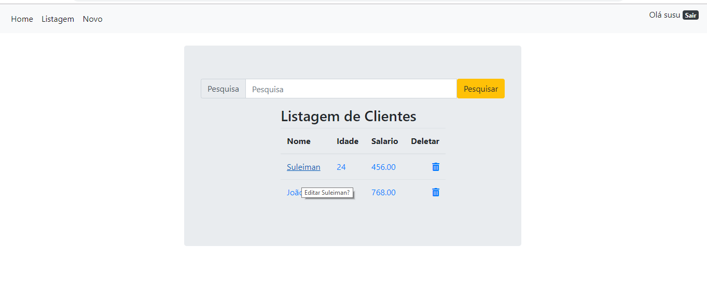
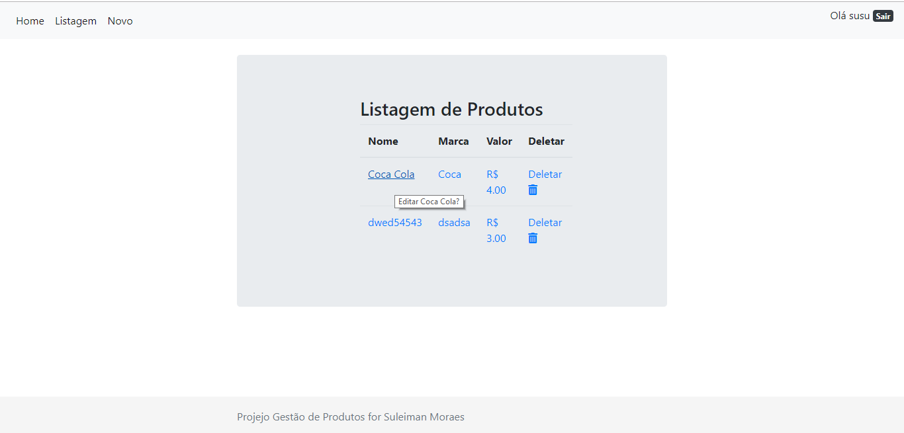
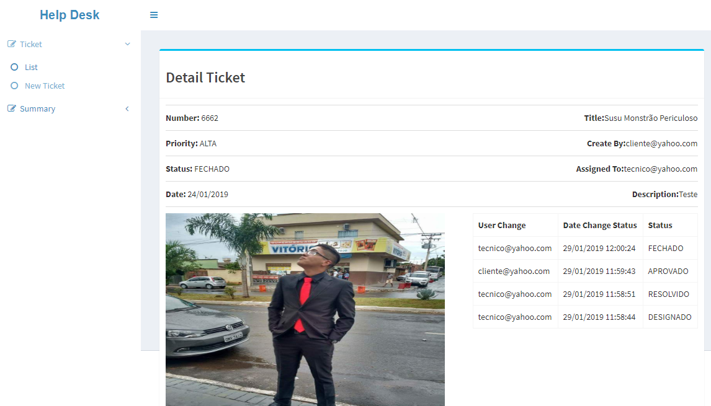
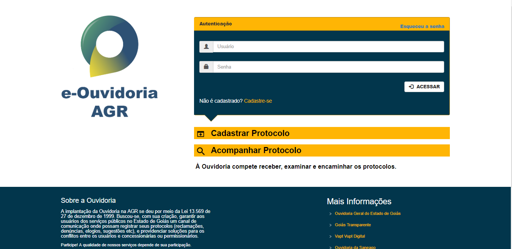
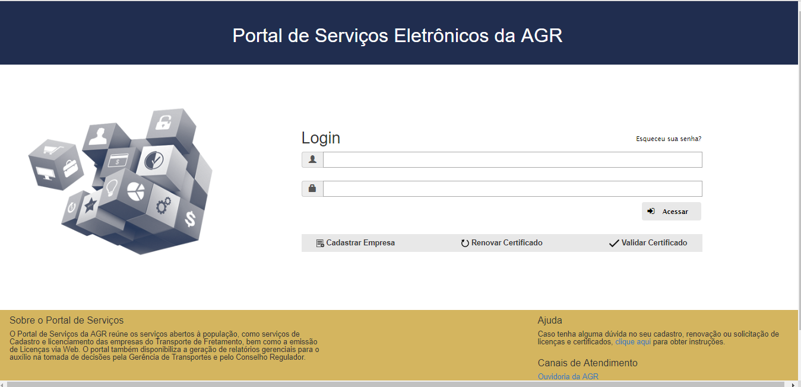
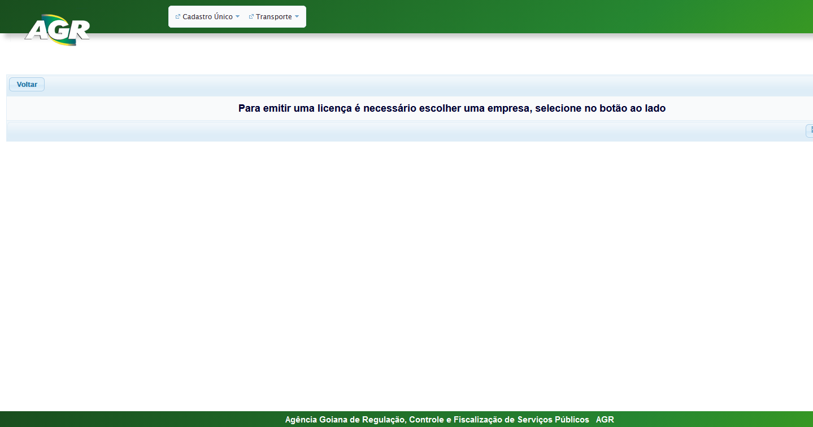
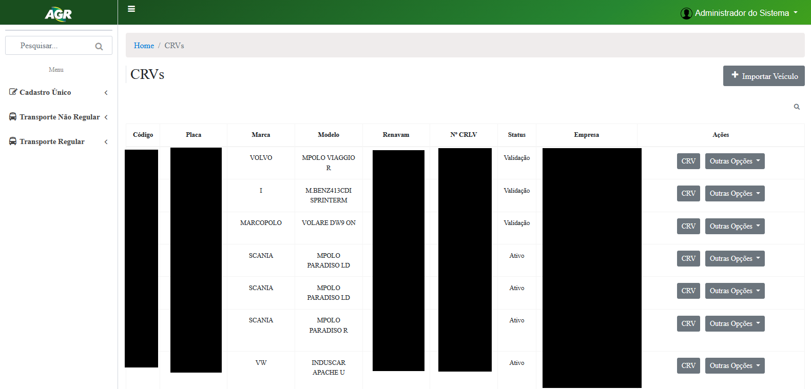

Sitema Django
Sistema de gestão de clientes, feito em python com o framework django na
versão 2.1.3, o banco de dados é PostgreSQL, todo o código fonte se encontra no GitHub, tanto o
sistema quanto o banco estão hospedado no Heroku. Obs.: Pelo fato de estar no
Heroku, na primeira requisição ao servidor pode demorar um pouco, mais apenas a
primeira.Login: susuSenha: 12345678

Sistema Django
Sistema de gestão de produtos, feito em python com o framework django na
versão 2.1.3, o banco de dados é PostgreSQL, todo o código fonte se encontra no GitHub, tanto o
sistema quanto o banco estão hospedado no Heroku. Obs.: Pelo fato de estar no
Heroku, na primeira requisição ao servidor pode demorar um pouco, mais apenas a
primeira.Login: susuSenha: 12345678
Enviador de e-mail
API de enviar email, feita com o framework Spring Boot, todo o código fonte
se encontra no GitHub, não possui
banco, o serviço é disponibilizado na plataforma Heroku.Obs.: Pelo fato de estar no
Heroku, na primeira requisição ao servidor pode demorar um pouco, mais apenas a
primeira.

Sistema Help Desk
Sistema feito com front end em Angular 7 disponibilizado no GitPages, back
end feito em java com o framework Spring Boot disponibilizada a API no Heroku, sendo que
a mesma pussui autenticação de usuário com Spring Security e JWT, banco de dados é o
MongoDB que se encontra hospedado no mLab, todo o código fonte se encontra no GitHub
tanto back end
como o front
end.Obs.: Pelo fato de estar no Heroku, na primeira requisição ao servidor
pode demorar um pouco, mais apenas a primeira.Login: cliente@yahoo.comSenha:
123456

e-Ouvidoria da AGR
Sistema feito para a ouvidoria do orgão AGR, gerenciador de dependências é
o gradle,
utiliza JSF e PrimeFaces, código fonte privado.

Portal de Serviços Eletrônicos da AGR
Sistema feito para o orgão AGR, onde desempenha funções relacionadas
principalpalmente a cadastros de empresas e pessoas,
além de ser o portal de acesso aos demais sistemas do orgão;
gerenciador de dependências é o maven, utiliza Angular 7 e Java 8, código fonte privado.

Módulo Transporte Não Regular
Sistema feito para o orgão AGR, onde desempenha funções relacionadas
principalpalmente a emissão de Licenças de Viagens,
além de gerenciar as viagens feitas dentro do Estado de Goiás;
gerenciador de dependências é o gradle,
utiliza JSF e PrimeFaces, código fonte privado.

Módulo Transporte Regular
Sistema feito para o orgão AGR, onde desempenha funções relacionadas
a gerenciamento e controle de de veículos aptos a Transporte Regular de Passageiros;
gerenciador de dependências é o maven, utiliza Angular 7 e Java 8, código fonte privado.